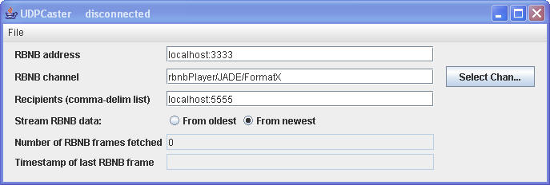
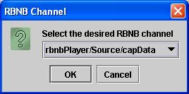

Introduction
Overview
Setup and StartupMenu Bar
File
User Interface Fields
RBNB address
RBNB channel
Select Chan...
Recipients (comma-delim list)
Stream RBNB data
Number of RBNB frames fetched
Timestamp of last RBNB frame

| Option | Description |
| -a <DataTurbine host:port> |
Specifies DataTurbine to which to connect; defaults to "localhost:3333". |
| -c <DataTurbine channel> |
Specifies the DataTurbine channel to which to subscribe; no
default value. |
| -h |
Print a help message displaying
the command-line options. |
| -o |
Stream from oldest. |
| -r
<host:port list> |
Comma-delimited list of
host:port recipients (specifies where to send the UDP
packets); defaults to "localhost:5555". |
| -s <local socket port> |
Specifies the local socket port to use to send out UDP packets; defaults to 3456. In most cases, it is best to allow the system to automatically select the local socket port. If a local port is specified on the command line, the system will attempt to use that port. However, if that port is already in use, the system will automatically select a different port. |
| -x |
Auto-start on launch (make RBNB
connection and establish subscription). |
| Open | The following actions are performed: 1. Open a connection to the DataTurbine at the address specified in the RBNB address field. 2. Subscribe to data stored in the channel specified by the RBNB channel field. 3. Fetch data from the DataTurbine either From oldest or From newest as specified by the radio button selection.. 4. Each data block fetched from the DataTurbine will be sent as a UDP packet to the addresses specified in the Recipients field. |
| Close | The following actions are performed: 1. Stop fetching data from the DataTurbine. 2. Close the connection to the DataTurbine. |
| Exit | Close the DataTurbine connection and exit program. |
